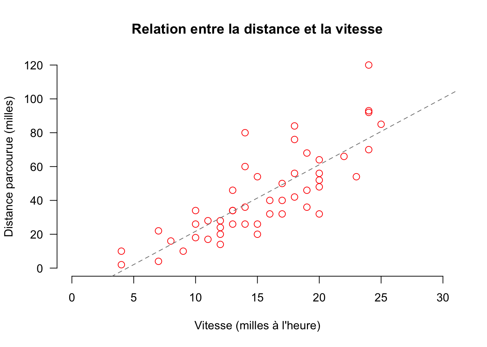
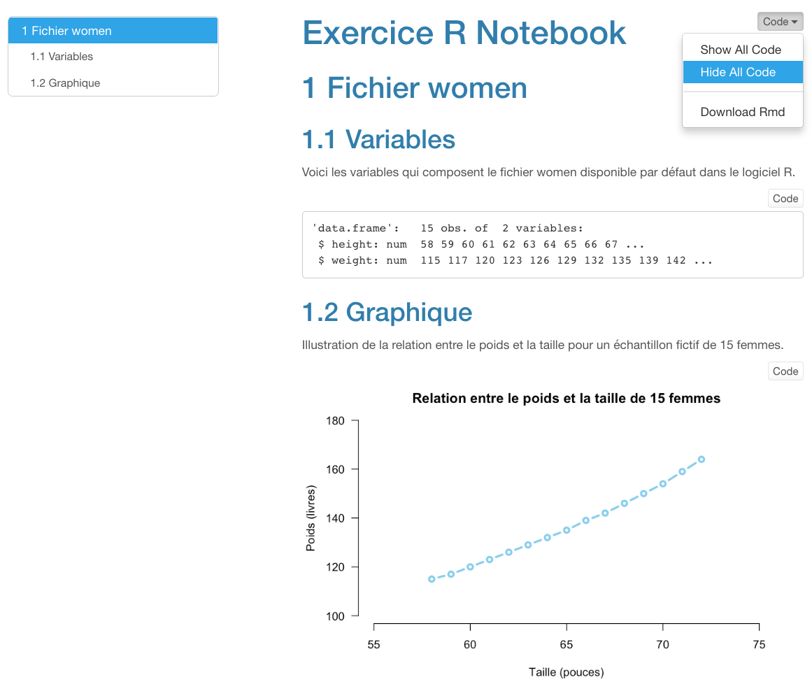

str(cars)'data.frame': 50 obs. of 2 variables:
$ speed: num 4 4 7 7 8 9 10 10 10 11 ...
$ dist : num 2 10 4 22 16 10 18 26 34 17 ...Dans le chapitre précédent, nous avons vu comment insérer un bloc de codes R à l’intérieur d’un document R Notebook. Dans le présent chapitre, à l’aide d’un exemple, nous allons explorer plus en détails le fonctionnement des blocs de codes R dans R Notebook.
Avant d’aborder l’utilisation de blocs de codes R, j’encourage les plus curieux d’entre vous à consulter le livre électronique d’Anouar El Ghouch, professeur de statistiques à l’Université Catholique de Louvain (Belgique). Dans son livre Exploration de données avec R, le professeur Ghouch présente de façon simple la plupart des concepts de base de R.
Si la lecture en anglais ne vous fait pas peur, je suggère fortement la lecture du livre électronique d’Alex Douglas, Deon Roos, Rrancesca Mancini, Ana Couto et David Lusseau (2022). An Introduction to R. À mon avis, ce livre est l’un des meilleurs pour introduire les logiciels R et RStudio. Plusieurs petits trucs y sont présentés et ce, dans un style d’écriture très abordable. Et, comme bonus, les auteurs ont intégré quelques vidéos qui permettent de bien comprendre comment utiliser R et RStudio. Vous pouvez consulter la liste de ces vidéos en cliquant ici.
Afin de démontrer le fonctionnement des blocs de codes R dans R Notebook, utilisons un fichier de données déjà disponible par défaut dans R1. Nous allons utiliser le fichier de données cars. Ce fichier contient des données relatives à différentes marques de voitures.
La fonction str de R permet d’examiner le contenu d’un ensemble de données (str = structure). Puisque nous avons sélectionné l’option inline dans les métadonnées, après avoir exécuté la ligne de codes, les résultats s’affichent directement sous les codes exécutés dans la fenêtre Source de RStudio.
str(cars)'data.frame': 50 obs. of 2 variables:
$ speed: num 4 4 7 7 8 9 10 10 10 11 ...
$ dist : num 2 10 4 22 16 10 18 26 34 17 ...Suite à l’exécution de la commande str(cars), nous remarquons que le fichier cars contient 50 observations (i.e. 50 voitures) et deux variables, soit speed et dist2. Ces deux variables sont de nature numérique (num). De plus, les dix premières valeurs de chacune des variables sont affichées à la droite du nom de chaque variable. Dans ce livre, vous pouvez copier les codes R en cliquant sur l’icone situé à la droite dans les blocs de codes R.
Imaginons que nous voulons examiner la relation qui existe entre les variables speed et dist à l’aide d’un diagramme en nuage de points (scatterplot, en anglais). La fonction plot de R permet de créer rapidement ce type de graphique.
Notez que les variables sont nommées en relation avec leur ensemble de données d’appartenance (cars) à l’aide du signe $. Par défaut, avec la fonction plot, la première variable nommée (cars$speed) se retrouve sur l’axe des X et la seconde variable (cars$dist) sur l’axe des X3.
plot(cars$speed, cars$dist)
Le graphique présenté ci-haut est correct mais rien pour écrire à sa mère, n’est-ce pas ? Heureusement, R possède de nombreuses fonctions graphiques de base qui permettent d’améliorer l’apparence visuelle des graphiques. Ci-dessous, j’apporte les modifications suivantes :
type = "p" qui permet de préciser le type de graphique désiré (“p” = nuage de points). Il est possible de créer d’autres types de graphique avec la fonction type. Je vous invite à cliquer ici ou ici pour voir les autres types de graphiques possibles.xlab, ylab, col, main, etc.) qui permettent de contrôler l’aspect visuelle du graphique.# permet aussi d’insérer des commentaires qui ne sont pas traités comme des lignes de codes. Cela permet de documenter l’utilisation de telle ou de telle fonction directement dans notre bloc de codes.De plus, imaginons que nous voulons ajouter la droite de régression qui permet de prédire la variable dist à partir de la variable speed. Il faut dans un premier temps :
model_1)4 qui contient les résultats du calcul de la droite de régression avec la fonction lm (lm = linear model) et,abline à partir de l’objet R model_1plot(cars$dist ~ cars$speed, # variables mises en relation avec ~
type = "p", # nuage de points
main = "Relation entre la distance et la vitesse", # titre
xlab = "Vitesse (milles à l'heure)", # titre axe des x
ylab = "Distance parcourue (milles)", # titre axe des y
col = "red", # couleur des points
las = 1, # orientation horizontale des chiffres sur axe y
cex = 1.25, # grosseur des points
frame = FALSE, # pas de cadre autour du graphique
xlim = c(0, 30), # étendue axe des x
ylim = c(0, 120) # étendue axe des y
)
model_1 <- lm(cars$dist ~ cars$speed) # modèle linéaire simple
abline(model_1, col="grey50", cex=2, lty="dashed") # droite de régression
Dans le but de mettre en pratique quelqu’uns des éléments présentés ci-haut, voici un exercice. À partir du fichier Exercice R Notebook que vous avez complété lors de l’Exercice 4, veuillez ajouter :
GraphiqueIllustration de la relation entre le poids et la taille pour un échantillon fictif de 15 femmesGraphique amélioré.Code dans le coin supérieur droit)
Vous pouvez consulter la liste de tous les ensembles de données disponibles dans R en inscrivant le code data() dans la fenêtre Console de RStudio.↩︎
La variable speed désigne la vitesse (en milles à l’heure) de la voiture et la variable dist désigne la distance de freinage (en pieds). Ces données ont été collectées dans les années 1920 ! Pour obtenir des informations supplémentaires sur cet ensemble de données, tapez ?cars et la touche ↵ dans la Console de RStudio.↩︎
Il est aussi possible d’écrire plot(cars$dist ~ cars$speed). Dans ce cas, la variable distance est mise en relation avec la variable speed à l’aide du symbole ~ (tilde). Avec cette notation, la première variable désigne la variable dépendante (dist) et la seconde variable désigne la variable indépendante (speed).↩︎
Le nom d’un objet R est arbitraire. Vous pouvez écrire le nom que vous voulez. Nous aurions pu l’appeler Michel !↩︎
Même en sélectionnant le bon type de graphique, il est possible que la ligne qui joint les points n’apparaissent pas. Solution : Il faut agrandir la fenêtre Source du logiciel RStudio.↩︎